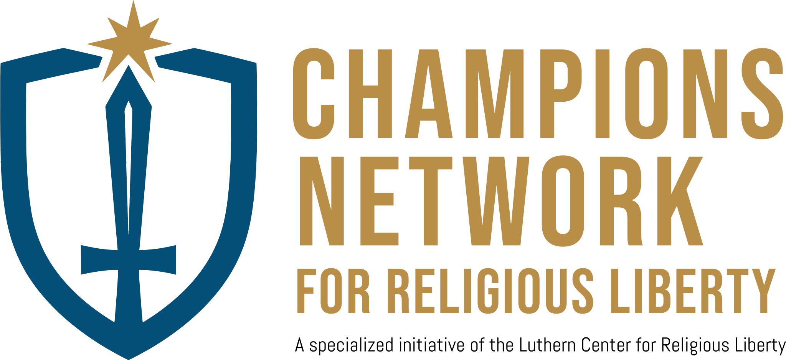

Official visual identity and communication standards for the Champions for Religious Liberty Network — an initiative of the Lutheran Center for Religious Liberty, Washington, D.C.
The Champions for Religious Liberty Network is a specialized initiative of the Lutheran Center for Religious Liberty (LCRL), rooted in the Lutheran Church—Missouri Synod tradition. The network educates and empowers Christians to become informed Champion Citizens — men and women who can advocate for religious liberty, marriage, and the sanctity of life without compromising the saving mission of the Church.
The Left-Hand Kingdom: God preserving temporal civility through law and government. The Right-Hand Kingdom: God saving souls through the Church and the Gospel. Champion Citizens understand — and live within — both kingdoms.
The LCRL draws a deliberate distinction. Advocates engage for the sake of the Gospel mission. Activists prioritize political outcomes. Champions are always the former — measured, truth-filled, and motivated by love of neighbor.
The five-year tiered pathway — from Apprentice to Knight — reflects the conviction that mature, grounded advocacy requires time, mentorship, and formation, not reactionary urgency.
A nationwide coalition of Champions Churches able to speak coherently on key issues: religious liberty, marriage, and education — from the authority of a Washington, D.C. advocacy organization with deep theological roots.
The network explicitly addresses cultural shifts that the LCRL identifies as threatening the free exercise of Christianity in America. These threats define the scope of Champion Citizens' advocacy — always within the Two-Kingdom framework.
Opposing the legal and cultural "re-gendering" of persons and the redefinition of marriage — areas where government policy increasingly conflicts with biblical anthropology and the rights of religious institutions.
Addressing the "cheapening" of human life through policy and cultural norms. Champions advocate for the sanctity of life from conception to natural death as a matter of both theological conviction and constitutional principle.
Challenging trends where civil government replaces parental authority, silences ecclesiastical speech, or otherwise transgresses its proper Left-Hand Kingdom role by intruding into the domain of family and church.
Opposing policies and legal frameworks that penalize the expression of a biblical worldview as "hate speech" — a direct threat to religious liberty and the free proclamation of the Gospel.
These values govern every visual decision, communication, and program expression of the Champions Network brand.
| Value | Brand Expression |
|---|---|
| Religious Liberty | The foundational cause — the freedom to preach, teach, and live the Gospel without government interference. |
| Two-Kingdom Clarity | Helping Christians distinguish their dual role as citizens of the temporal and the eternal kingdoms — never confusing the two. |
| Theological Integrity | All messaging is grounded in Lutheran doctrine and constitutional principle — never reactionary or merely partisan. |
| Civic Courage | Speaking truth in love; engaging the public square with conviction and the posture of an advocate. |
| Long-Term Formation | The five-tier pathway reflects a commitment to maturity over urgency — patience, mentorship, and the long view. |
| Unified Voice | A nationwide coalition of Champions Churches speaking coherently on shared convictions at local, state, and national levels. |
The LCRL palette draws from gold and blue — colors of valor, civic authority, and the clarity of truth. Gold signals knighthood and honor; blue grounds the brand in institutional trust and constitutional conviction. Use these consistently across all brand touchpoints.
These pairings are tested for WCAG contrast compliance and brand consistency.
Typography must feel principled, authoritative, and institutional. The brand uses a two-family system: a condensed serif drawn from the LCRL parent logo for the wordmark and primary headings, and a modern geometric sans-serif in light/thin weights for body copy and supporting text. This pairing signals both theological heritage and civic clarity.
Condensed display typeface — all-caps, Tan/Gold colorway. Used for the "CHAMPIONS NETWORK" wordmark and primary headings. Available free via Google Fonts. Pairs with a geometric sans-serif for body copy.
Light or thin weight only. Primary recommendation: Proxima Nova Light. Free alternatives: Poppins Light or Montserrat Light. Use for subtext, body copy, captions, and fine print.
The Champions Network logo comprises two elements: the icon mark (a clean shield outline containing an upward-pointing sword, with a gold star-cross at the tip representing the saving purpose of the Gospel) and the wordmark in the LCRL condensed serif. The shield symbolizes defense of the faith; the sword, the Word of God. Never alter, recolor, distort, or separate these elements without authorization.

This logo is a balanced, coherent evolution. It honors the parent organization's heritage while establishing a powerful and distinct identity for the Network — grounded in four best practices: Simplicity, Memorability, Versatility, and Relevance.
The new design uses the exact unique, condensed tan/gold serif font from the parent LCRL logo. This is non-negotiable for ensuring brand association and trust — it provides the core visual link between the Network and its parent organization.
Unlike previous iterations — a cluttered text arrangement and a complex, disconnected mark — this logo is simple. The mark is a singular, powerful symbol that reads distinctly at any size, from a letterhead to a highway sign.
The design moves away from generic flames and a cluttered Capitol/Shield split. A clean shield and upward-pointing sword represent the Left-Hand Kingdom role of protection and defense (the Knight/Tier 5 symbol). A gold star-cross at the sword tip represents the Right-Hand Kingdom goal of grace — a far stronger symbolic tie than vague flames or a standalone dome.
The parent LCRL logo features a Capitol dome and split shield. This mark creates a more unified expression of the same core values — re-using the parent colors and typeface, but with a unique graphic mark that makes "Champions Network" feel like an empowered, specialized extension, not a smaller copy of the main office.
Three iterations of the Champions Network identity, evaluated against brand best practices.
A clean, bold blue shield outline. Within the shield, a confident upward-pointing sword. At the tip, a distinct gold/tan star-cross hybrid representing achievement and the saving purpose of the Gospel. Powerful, integrated, and readable at any scale.
Rendered in the exact parent typeface — a specific, condensed tan/gold font. CHAMPIONS (large, tan) on line one. NETWORK (large, tan) on line two. All-caps, matching the LCRL parent brand precisely.
FOR RELIGIOUS LIBERTY in the parent typeface on a single line for simplicity. An optional fourth line — "A specialized initiative of the Lutheran Center for Religious Liberty" — in smaller gray sans-serif, using title case to subordinate it beneath the primary all-caps brand names.
| Logo Attempt | Typeface | Mark Relevance | Scalability | Best Practices | Verdict |
|---|---|---|---|---|---|
| Debut Logo | Sans-Serif — Incorrect | Text arrangement only — no symbol | Poor | Poor | Fail |
| Redesign 1 | Sans-Serif — Incorrect | Complex flames — vague, disconnected | Moderate | Poor | Fail |
| Current Redesign | Parent Typeface — Exact match | Sword / Shield / Star-Cross — Knight tier & Two-Kingdom relevance | Excellent | High | Success |
Affiliation is organized into three distinct layers, allowing churches to scale involvement as they develop internal leadership capacity.
The entry point for individuals and small groups. Provides educational resources and facilitated discussions on Two-Kingdom citizenship. Includes a general citizen track and an advanced track for those developing as local leaders.
A congregation becomes an Official Champions Church upon completing Year 1 of the 2KG Academy. At this stage, the LCRL works directly with pastors and church boards to develop strategic support for Champion Citizens and local community engagement plans.
The highest level of affiliation — a nationwide coalition of Champions Churches. Enables congregations to share ideas, connect across state lines, and speak with a unified voice on national policies affecting religious liberty and education.
The knighthood tier system ensures advocacy is grounded in maturity, not reactionary urgency. This progression is central to the brand's visual and narrative identity.
Learning the foundational principles of religious liberty and Two-Kingdom citizenship. Building the theological and constitutional vocabulary of the Champion Citizen.
Refining applications and beginning to engage local and state governing authorities. Moving from education into action under the guidance of a senior mentor.
Maturing in community engagement and discovering how to communicate conviction without becoming an activist. Truth spoken in love, with constitutional precision.
Mentoring newer members and participating in regional and national LCRL events. Beginning to shape the direction of the local Champions community.
Long-term loyalty and mentoring the next generation of Champion Citizens. The Knight stands in the gap — defending the preaching of the Gospel in the public square with the full weight of formation and experience.
The Champions Network brand voice is theologically grounded, civically engaged, and courageously principled — always measured, never reactionary.
Every communication reflects the Two-Kingdom framework. Never conflate political victory with the mission of the Church. The LCRL speaks from the Right-Hand Kingdom about the Left-Hand Kingdom — with clarity about the distinction.
The network is fluent in both biblical and constitutional language — for an audience that is simultaneously a member of the Body of Christ and a citizen of the United States. Reference Scripture alongside the First Amendment.
The LCRL does not endorse candidates or campaigns. It advocates for principles — religious liberty, marriage, sanctity of life — grounded in natural law and Lutheran theological tradition. Avoid partisan framing entirely.
An advocate engages for the sake of the Gospel mission. An activist prioritizes political outcomes above Gospel proclamation. Brand language must always reflect the advocate's posture — measured, truth-filled, neighbor-loving.
The five-tier pathway exists because formation takes time. Brand communication reinforces the long view — patience, mentorship, maturity — over urgency or alarm. Champions are shaped, not manufactured.
Rooted in the LCMS tradition. Language reflects Lutheran theological confidence without exclusion. References to the Two-Kingdom doctrine, the Gospel, and the means of grace are appropriate and expected.
Every application of the brand must meet the standard of a Washington, D.C. advocacy organization — clean grids, consistent color, and typography that places the mission first.
Affiliation is a long-term commitment, not a simple membership. Churches enter through structured engagement and grow through the five-tier pathway.
| Format | Description |
|---|---|
| Liberty Lectures | 60–90 minute interactive presentations on foundational constitutional protections and the biblical roots of religious freedom. Ideal first engagement for interested congregations. |
| Liberty Weekends | Saturday workshop plus Sunday Religious Liberty Sunday service. LCRL staff preach and lead Bible classes at the host church — the most immersive initial experience available. |
| Virtual Consultation | A direct meeting with Network Director Rev. Mark Frith to discuss localized engagement strategy and readiness for the 2KG Academy launch. |
| 2KG Academy Launch | Form a local leadership team, recruit participants, and begin the Tier 1 curriculum. After Year 1, the church formally partners as an Official Champions Church. |
| Champions Chapters | Local chapter leadership teams of 4–5 facilitators organized around three pillars: Hospitality (creating welcoming formation environments), Prayer (covering advocacy in intercession), and Communication (sharing the network's voice in the community). |
Required reading for all Champions entering the Tier 1 Apprentice pathway. Provides the foundational constitutional and theological framework for understanding religious liberty in America — essential vocabulary for every Champion Citizen.